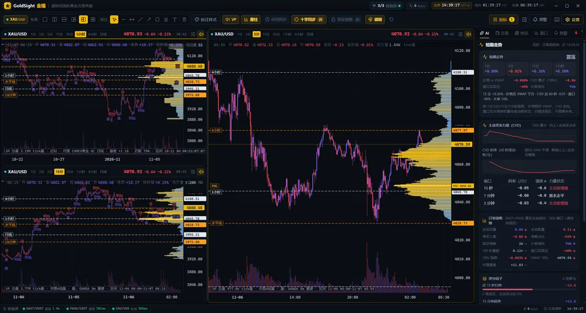
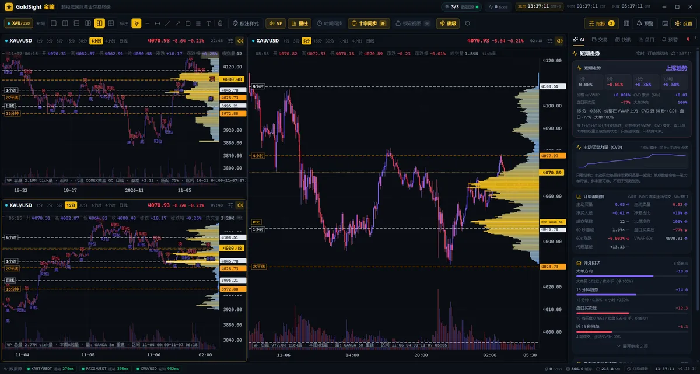
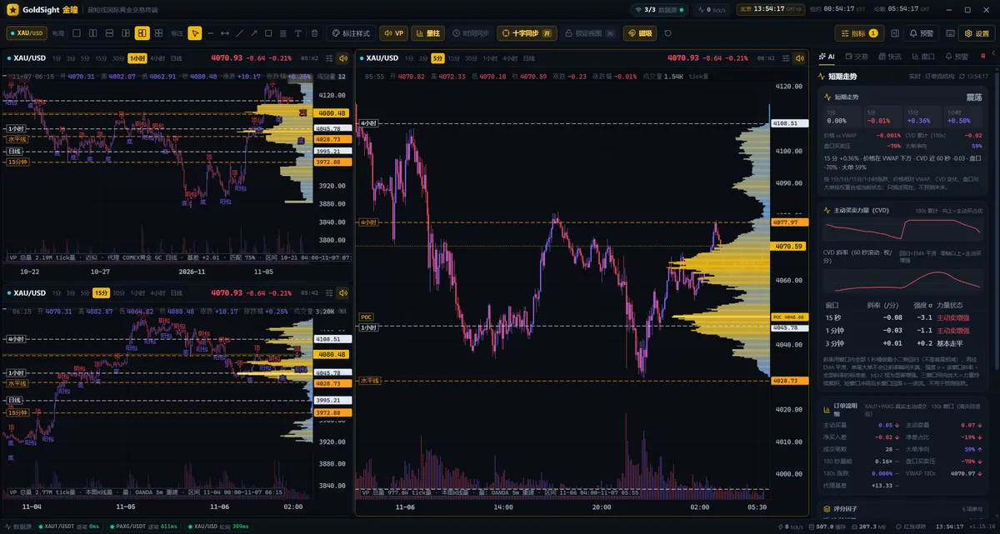
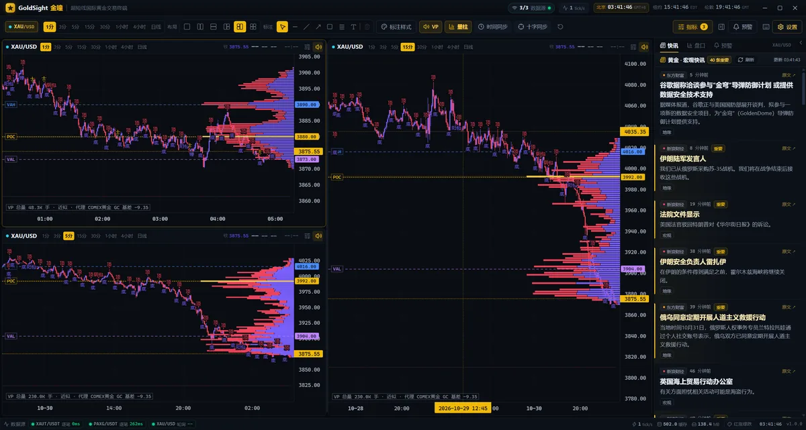

实时黄金行情
OKX / Gate 的黄金代币逐笔成交，作为现货黄金的实时参考（成交方向真实，非报价推断）。
Windows 10 / 11 · 免费下载 · 绿色便携版
成交量分布看筹码堆在哪、订单流 CVD 看主动买卖谁在持续、短期走势卡把多周期涨跌合成一句话。免费数据源开箱可用，不需要 API Key，也不需要注册。
当前设备不是 Windows 10/11：仍可下载压缩包，复制链接到 Windows 电脑解压后运行 GoldSight.exe。

OKX / Gate 的黄金代币逐笔成交，作为现货黄金的实时参考（成交方向真实，非报价推断）。
东方财富公开接口提供 COMEX 黄金行情与财经快讯，用于订单流与情绪参考。
有 OANDA 账户可填自己的 Token 拉真实历史 K 线；没有也能正常使用，界面会自动回退。
软件不内置任何需要付费购买的行情 Key，也不会替你购买行情。数据延迟取决于公开源，通常为秒级到分钟级。
每张卡片点开看细节；手机上直接点按展开。
筹码堆在哪一目了然
按价格档统计成交量，POC 价格直接标在右侧刻度尺；默认按量能渐变着色，不再依赖买卖分色。支持交易日累加、可视范围、锚定与固定区间。
看主动买卖是持续还是一波流
主动买卖差、CVD 累计曲线与 60 秒滚动斜率，配合盘口买卖压与大单方向。斜率用回归 + EMA 平滑，并给出强度 σ，避免被单笔大单带偏。
1/5/15 分钟与 1 小时涨跌合成一句话
多周期真实涨跌、价格相对 VWAP、CVD 变化、盘口与大单按权重合成当前状态（上涨趋势 / 偏多 / 震荡 / 偏空 / 下跌趋势）。只描述现在，不预测未来。
实时练习与历史回测，不碰真钱
市价/限价、止损止盈、杠杆与账本统计；按 K 线回放做历史练习，每笔交易自动记录。仅模拟，不接入任何实盘下单接口。
1/2/3/4 图布局，标注、指标、预警
水平线、趋势线、矩形、斐波那契、文字备注；MA/EMA/VWAP/BOLL 与 K 线形态；价格预警、快讯、盘口。画布支持键盘操作（←→ 平移、+/- 缩放）。
按 ? 看全部快捷键
配色、周期记忆、布局记忆、界面缩放；按 ? 打开快捷键面板，常用操作都有键盘路径，也有按钮等价入口。
价格
下载后 ¥9.9 一次买断，永久使用，不订阅、不按年收费。付款全程在软件内完成：扫码付款后自动解锁，不需要加微信、也不需要发截图。
购买全程在软件内完成：不需要在网页付款，也不需要加微信或发截图；用微信 / 支付宝扫码后自动解锁。
不需要安装包，也不需要管理员权限。
下载压缩包，解压到一个有写入权限的文件夹（例如 D:\GoldSight），不要放在系统盘的只读目录。
如果 Windows 弹出「已保护你的电脑」，点「更多信息 → 仍要运行」；绿色版未做代码签名，这是正常提示。
默认已连好免费数据源，直接看 XAU/USD；按 ? 查看快捷键，指标面板里可以微调成交量分布与订单流。
校验下载完整性：
计算中…
左右滑动查看（手机上露出下一张）。



没列到的，下载后按 ? 或看设置里的说明。
免费下载、免费数据：软件可免费下载，行情全部来自公开免费数据源，不需要注册账号、不内置付费 API。使用全部功能需 ¥9.9 一次买断解锁（微信 / 支付宝扫码，付款后自动解锁，不订阅）。
现货参考来自黄金代币的实时逐笔（秒级）；COMEX 与新闻来自公开接口，通常为秒级到分钟级。它不是 CME 官方逐笔或 DOM，做超短线可以看结构与方向，但不要把它当成交易所原始盘口。
不能。模拟交易只在软件内部记账，不连接任何券商或交易所，也不涉及真实资金。软件仅用于行情研究与练习。
目前只提供 Windows 10/11 x64 版本。Mac 需要自行用源码构建；手机端暂不支持，页面上看到的截图来自桌面版。
绿色版没有做代码签名，部分安全软件会提示未知发布者。可以先用页面上的 SHA256 校验文件完整，再选择「更多信息 → 仍要运行」。软件不写注册表，删除整个文件夹即可卸载。
这是有意保留的诚实提示：我们回测了 30 天近 2.9 万根 1 分钟数据，简单动量与推断订单流在 3~30 分钟持有期没有稳定方向优势。所以订单流面板只描述当前结构，评分与命中率默认折叠，不诱导你按「偏多/偏空」下单。
一般不需要梯子：软件直连 Gate.io（XAUT 逐笔）与 Binance Data-Stream（PAXG 逐笔/盘口），国内宽带实测可直连，订单流、CVD、盘口都能用。只有可选项受影响：OKX 历史兜底、Swissquote 备用报价、OANDA 真实历史（需要自己的 Token 且走代理）。万一你的网络连不上订单流数据源，AI 面板会直接提示，K 线与成交量分布（COMEX/东方财富）不受影响。
一般几秒内：软件每 1.2 秒查询一次支付结果，付款成功后激活窗会自动消失。如果超过几分钟仍未解锁，点激活窗里的「已付款？立即查询」立即重试；仍不行请到 GitHub Issues 留言并附上订单号（付款页面显示），会人工补发或退款。
软件是虚拟商品，付款后自动解锁、可长期使用，原则上不支持无理由退款。建议先免费下载、把行情和功能都试一遍，确认适合自己再购买；若付款后未能解锁，会协助补发或全额退款。
本站有 4 个展示位，流量主要来自黄金交易、量化工具与行情软件搜索，适合工具类、数据类、投教类合作。按月固定位置展示，内容可随时更换，可在 GitHub Issues 备注「广告合作」联系。